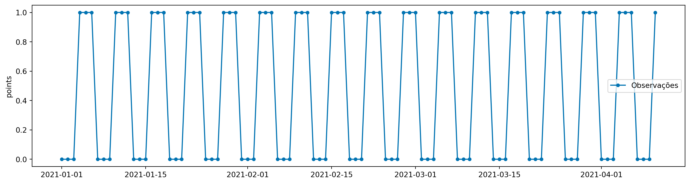
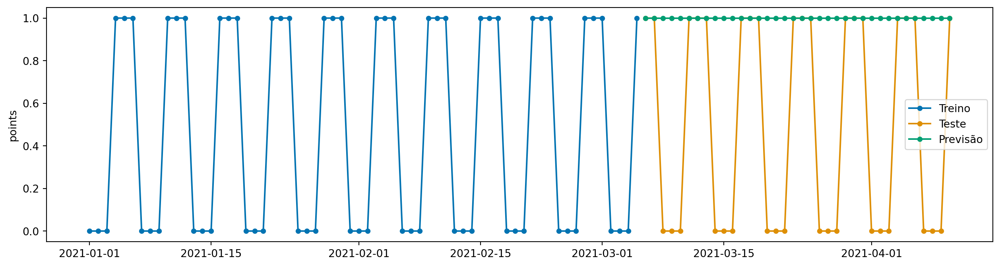
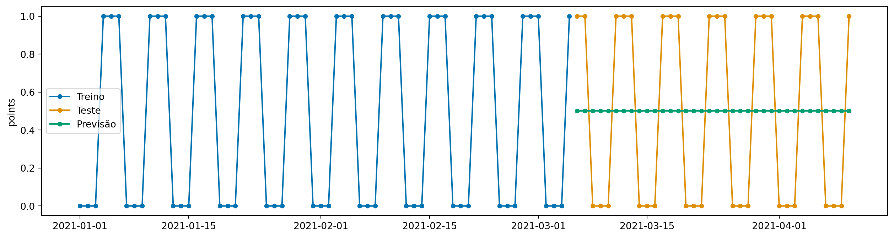
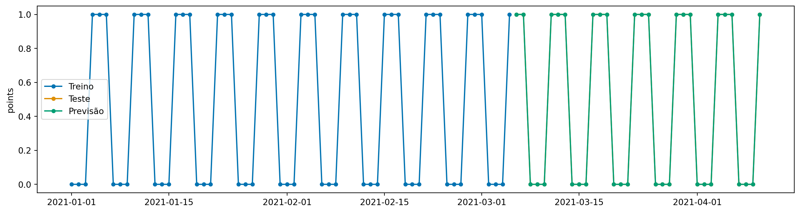

from tsbook.datasets.simple import SimpleDataset
dataset = SimpleDataset(True)
y = dataset.load("y")
y.head()| points | |
|---|---|
| 2021-01-01 | 0 |
| 2021-01-02 | 0 |
| 2021-01-03 | 0 |
| 2021-01-04 | 1 |
| 2021-01-05 | 1 |
Considerando o nosso exemplo da caixa com bolas pretas e vermelhas, um modelo simples para prever a próxima bola que vamos tirar da caixa é o Modelo Naive.
Existem algumas versões de modelo naive:
Esse modelo é simples, mas é extremamente eficaz e dificil de ser vencido em muitos casos. No cenário onde os dados não vêm organizados em nenhuma ordem específica, a melhor aposta que podemos fazer é o valor médio das bolas no histórico recente.
Vamos ver como fazer um forecast simples com sktime, usando o modelo Naive.
Aqui, baixamos o dataset simples que vem na biblioteca desse repositório.
from tsbook.datasets.simple import SimpleDataset
dataset = SimpleDataset(True)
y = dataset.load("y")
y.head()| points | |
|---|---|
| 2021-01-01 | 0 |
| 2021-01-02 | 0 |
| 2021-01-03 | 0 |
| 2021-01-04 | 1 |
| 2021-01-05 | 1 |
Esse é um dataset simples com uma série temporal mensal. Vamos dividir os dados em treino e teste, usando os últimos 36 meses como teste. Para isso, devemos respeitar a ordem temporal dos dados.
A função temporal_train_test_split faz isso para nós.
from sktime.forecasting.model_selection import temporal_train_test_split
y_train, y_test = temporal_train_test_split(y, test_size=36)Também temos uma função de plotagem simples para visualizar séries temporais.
from sktime.utils.plotting import plot_series
plot_series(y, labels=["Observações"])
No sktime, os modelos são usados em 3 passos:
__init__): aqui, definimos os hiperparâmetros do modelo. Pense nessa parte como a configuração do modelo.fit): aqui, o modelo aprende com os dados de treino.predict): com esse método, o modelo faz previsões para os dados futuros.Quando inicializamos o modelo em um notebook, o sktime mostra uma ilustração do modelo, o que é útil para entender o que está acontecendo “por baixo dos panos”. Em casos mais complexos com composição de modelos, isso pode ser útil para ilustrar o que estamos fazendo para outros cientistas.
from sktime.forecasting.naive import NaiveForecaster
model = NaiveForecaster(strategy="last")
modelNaiveForecaster()Please rerun this cell to show the HTML repr or trust the notebook.
NaiveForecaster()
Ao treinar o modelo, passamos dados de treinamento.
model.fit(y_train)NaiveForecaster()Please rerun this cell to show the HTML repr or trust the notebook.
NaiveForecaster()
Para a previsão, temos que passar um argumento obrigatório: fh, abreviatura de “forecasting horizon” (horizonte de previsão). Tipicamente passamos um fh relativo, ou seja, no formato de uma lista
model.predict(fh=[1,2,3,4])| points | |
|---|---|
| 2021-03-06 | 1.0 |
| 2021-03-07 | 1.0 |
| 2021-03-08 | 1.0 |
| 2021-03-09 | 1.0 |
Onde cada número representa o número de períodos à frente que queremos prever. Também podemos passar o fh como um índice de tempo absoluto, que é o que faremos aqui. Vamos passar o índice de tempo do conjunto de teste.
y_pred = model.predict(fh=y_test.index)
plot_series(y_train, y_test, y_pred, labels=["Treino", "Teste", "Previsão"])
Para alterar hiperparametros de um modelo já existente, podemos usar o método set_params, que modifica in-place os hiperparâmetros do modelo.
model.set_params(
strategy="mean",
window_length=12,
)
model.fit(y_train)
y_pred = model.predict(fh=y_test.index)
plot_series(y_train, y_test, y_pred, labels=["Treino", "Teste", "Previsão"])
Podemos também testar o Naive sazonal, que repete a última observação de 6 períodos atrás.
model.set_params(
sp=6,
strategy="last"
)
model.fit(y_train)
y_pred = model.predict(fh=y_test.index)
plot_series(y_train, y_test, y_pred, labels=["Treino", "Teste", "Previsão"])
Claro, como esse exemplo é muito simples, o modelo naive sazonal captura perfeitamente a sazonalidade dos dados. No entanto, vamos ver no próximo capítulo um caso de uso mais realista, com dados de varejo, e estudaremos modelos mais avançados.